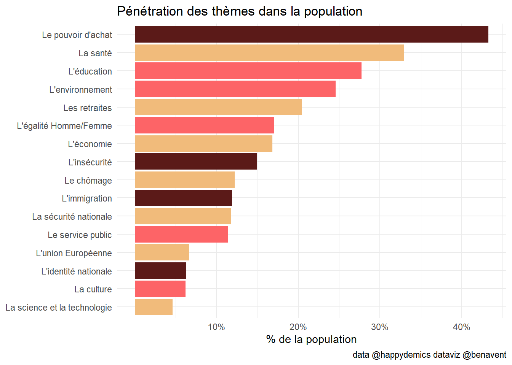
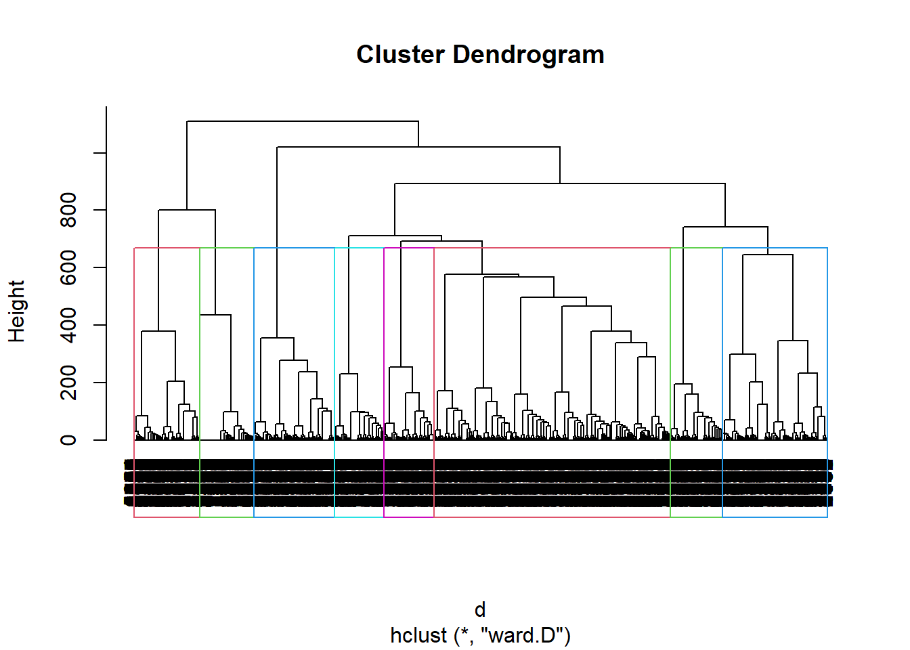
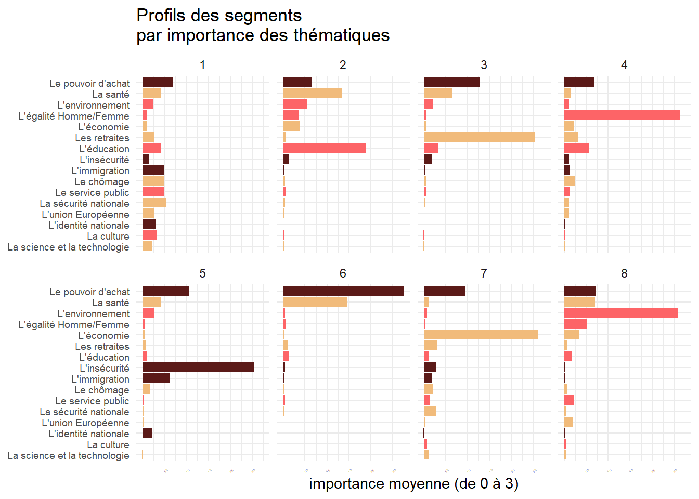
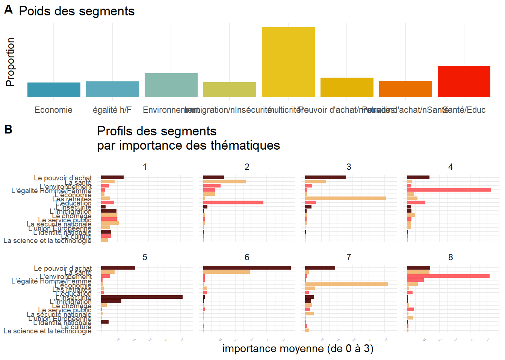
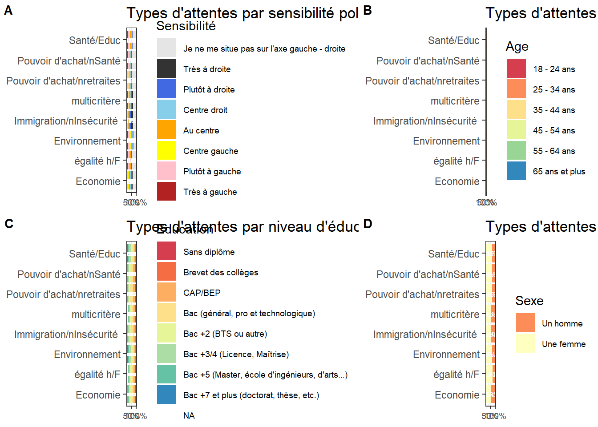
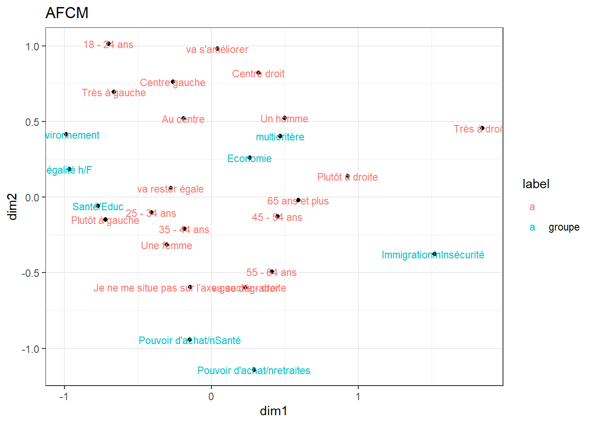

Chapitre 8 Clustering
L’objectif des méthodes de classification automatique est de regrouper des observations qui se ressemblent sur un ensemble multidimensionnel de caractéristiques.
insérer image
Dans ce chapitre nous examinons deux familles de méthodes qui le distingue par la procédure de calcul : hierarchique d’une part, non hiérarchique de l’autre. On garde pour le chapître suivant l’étude des modèles de décisions qui ont une longue et riche histoire en marketing et ont préparé le développement de certains modèles de machine learning.
8.1 Les méthodes hiérarchiques ascendantes
Elles trouvent leur origine en biologie où dès les années 1930 Sokal et Sneath(Sneath and Sokal 1973) ont proposé des méthodes pour analyser l’évolution des espèces. L’idée réside dans la comparison de specimens sur la base d’un certains nombre de caractéristiques, d’abord des caractères phénotypiques, puis dans ce domaine en s’appuyant sur les caractéristiques génétiques. Nous n’entrerons pas dans une discussion plus approfondis mais signalons que ces choix déterminent des méthodes et des hypothèses très différentes et largement débattues (cladistique etc)
Prenons le cas de différences phénotypiques et le tableau suivant.
tableau
Le but du jeu est de regrouper successivement les spécimens en fonction de leur ressemblance. L’algorithme consiste simplement à 1) calculer toutes les ressemblances deux à deux et 2) à fondre en une classe les deux éléments qui se ressemble le plus. On réitère l’opération jusqu’à ce qu’on obtienne plus qu’une classe.
Le résultat est une arborescence dont chaque noeud représente un regrouppement de classe à un certain niveau de distance.
figure
Leurs variétés dépend de deux paramètres :
- le choix de la mesure de dissimilarités : Une distance euclidienne ? Son carré ? Une distance binaire comme l’indice de Jaccard?
- le choix de la méthode d’agrégation : que choisit-on pour calculer la distance entre deux classes A et B : la plus grande des distances entre les éléments de A et ceux de B ? La plus petite ? La distance moyennes, la médiane ?
8.1.1 Mise en oeuvre
On utilise l’enquête d’happydemics sur la période de fin mars.
library(lubridate)
df<-readRDS("./data/last.rds") %>%
filter(date2>=make_datetime(year=2022, month=3, day = 19))
n_t<-nrow(df)
period<-" apres le 19 mars"Il y a un trick de traitement des données. La question QCM a été encodée en une colonne, ajoutant les chaines de caractère des 16 thématiques avec un séparateurs $ .
foo <-as.data.frame(str_split_fixed(df$themes, "\\$",n=3)) # On splite la colonne thème en autant de thème possibles
foo1<-cbind(df,foo)%>%
rename(V1=23, V2=24, V3=25) %>%
dplyr::select(id,V1,V2,V3)%>%
pivot_longer(!id,names_to="rank",values_to="theme")%>%
mutate(rank=ifelse(rank=="V1", 3,ifelse(rank=="V2", 2, ifelse(rank=="V3",1, 0)))) %>% #on recode les rangs par un facteur d'importance de à 0 à 3
filter(theme!="")%>%
mutate(theme=str_trim(theme))%>%
mutate(r=as.numeric(rank))%>%
dplyr::select(-rank)
n1<-nrow(df) # le nombre d'individus
n2<-nrow(foo1) #le nombre de mentionsDans une première étape faisons le bilan global
#on calcule la proportion et la pénétration des items
foo2 <-foo1%>%
mutate(m=1)%>%
group_by(theme)%>%
summarise(frequence=sum(m),
proportion=frequence/n2,
penetration=frequence/n1)
col<-c("#F1BB7B",
"#FD6467",
"#FD6467",
"#FD6467",
"#5B1A18",
"#5B1A18",
"#5B1A18",
"#F1BB7B",
"#FD6467",
"#F1BB7B",
"#F1BB7B",
"#F1BB7B",
"#F1BB7B",
"#5B1A18",
"#FD6467",
"#F1BB7B",
"#F1BB7B"
)
brks<-c(0.1, 0.2, 0.3,0.4,0.5,0.6)
ggplot(foo2,aes(x=reorder(theme, frequence), y=penetration))+
geom_bar(stat="identity", aes(fill=theme))+
coord_flip()+
scale_fill_manual(values=col)+
labs(title = "Pénétration des thèmes dans la population",
x=NULL,
y= "% de la population",
caption = "data @happydemics dataviz @benavent")+
theme_minimal()+
theme(legend.position = "none")+
scale_y_continuous(breaks = brks, labels = scales::percent(brks))
ggsave(paste0("./plot/theme_",period,".jpg"),plot=last_plot(), width = 27, height = 17, units = "cm")8.2 segmentation simplifiée
On commence va reconstruire un tableaux des individus x les thèmes. On garde les rangs comme indicateurs de l’importance .
foo3<-foo1%>%
pivot_wider(names_from="theme", values_from="r") %>%
replace(is.na(.), 0)
head(foo3, 8)## # A tibble: 8 x 17
## id `L'immigration` `Le pouvoir d'achat` `L'éducation` `L'égalité Homm~`
## <dbl> <dbl> <dbl> <dbl> <dbl>
## 1 235824277 3 0 0 0
## 2 235824417 0 3 2 1
## 3 235825307 0 3 0 0
## 4 235825503 0 0 0 0
## 5 235826269 0 1 0 0
## 6 235828154 0 2 3 0
## 7 235828507 0 0 3 2
## 8 235828613 1 2 0 0
## # ... with 12 more variables: `Les retraites` <dbl>, `L'environnement` <dbl>,
## # `Le service public` <dbl>, `L'insécurité` <dbl>, `La santé` <dbl>,
## # `Le chômage` <dbl>, `L'économie` <dbl>,
## # `La science et la technologie` <dbl>, `L'identité nationale` <dbl>,
## # `La sécurité nationale` <dbl>, `L'union Européenne` <dbl>,
## # `La culture` <dbl>On calcule un tableau de distance et on performe la classification automatique. dans cet essai on tente un modèle à 8 groupes.
foo4<-foo3[,2:17]
#distance
d<-dist(foo4)
#clustering
h.D <- hclust(d, method="ward.D")
#dendogramme
plot(h.D, hang=-1)
#identification des clusters
rect.hclust(h.D , k = 8, border = 2:6)
#attribution des clusters
memb <- cutree(h.D, k = 8)
#maj du fichier de données avec l'appartenace des individus aux groupes
foo5<-cbind(foo4, memb)Il reste à décrire les différents types sur les 16 variables qui les décrivent. On choisit une méthode de barre ordonnée avec un facetting par groupe.
foo6<-foo5 %>%
group_by(memb) %>%
pivot_longer(-memb,names_to="Thèmes",values_to="Valeurs")%>%
group_by(memb,Thèmes)%>%
summarise(Valeurs=mean(Valeurs))
foo6$group[foo6$memb==1]<-"multicritère"
foo6$group[foo6$memb==2]<-"Santé/Educ"
foo6$group[foo6$memb==3]<-"Pouvoir d'achat/nretraites"
foo6$group[foo6$memb==5]<-"Immigration/nInsécurité "
foo6$group[foo6$memb==4]<-"égalité h/F"
foo6$group[foo6$memb==6]<-"Pouvoir d'achat/nSanté"
foo6$group[foo6$memb==7]<-"Economie"
foo6$group[foo6$memb==8]<-"Environnement"
library(scales)
brks<-c(0.5,1,1.5,2, 2.5,3)
p2<- ggplot(foo6, aes(x=reorder(Thèmes, Valeurs), y=Valeurs))+
geom_bar(stat="identity",aes(fill=as.factor(Thèmes)))+
facet_wrap(vars(group), ncol=4)+
coord_flip()+
scale_fill_manual(values=col)+
theme_minimal()+
scale_y_continuous(breaks=brks)+
theme(legend.position = "none", axis.text=element_text(size=7),axis.text.x=element_text(angle = 45, vjust = 0.5, size=2))+
labs(title = "Profils des segments\npar importance des thématiques", x=NULL, y="importance moyenne (de 0 à 3)")
p2
ggsave("./plot/g_segment_p2.jpg",plot=last_plot(), width = 27, height = 17, units = "cm")
library(wesanderson)
seg_col<-wes_palette("Zissou1", 8, type = "continuous")
n<-nrow(foo5)
foo6<-foo5 %>% mutate(n=1) %>%
group_by(memb)%>%
summarise(freq=sum(n, na.rm=TRUE))%>% mutate( freq=freq/n)
foo6$group[foo6$memb==1]<-"multicritère"
foo6$group[foo6$memb==2]<-"Santé/Educ"
foo6$group[foo6$memb==3]<-"Pouvoir d'achat/nretraites"
foo6$group[foo6$memb==5]<-"Immigration/nInsécurité "
foo6$group[foo6$memb==4]<-"égalité h/F"
foo6$group[foo6$memb==6]<-"Pouvoir d'achat/nSanté"
foo6$group[foo6$memb==7]<-"Economie"
foo6$group[foo6$memb==8]<-"Environnement"
p1<- ggplot(foo6, aes(x=group, y=freq))+
geom_bar(stat="identity", aes(fill=group))+
scale_fill_manual(values=seg_col) +
theme_minimal()+
labs(title="Poids des segments", x=NULL, y="Proportion")+
scale_y_continuous(breaks=brks,labels=percent)+
theme(legend.position = "none")
ggsave("./plot/g_segment_p1.jpg",plot=last_plot(), width = 27, height = 17, units = "cm")
plot_grid(p1, p2, labels = c('A', 'B'), label_size = 12, ncol=1,rel_heights = c(1, 2))
ggsave("./plot/g_segment.jpg",plot=last_plot(), width = 27, height = 17, units = "cm")8.3 tableaux croisés de la typologie et des critères sociaux démos
On revient à une approche descriptive, on croisant successivement notre variable typologie avec les critères socio-demo qui ont été mesurés dans l’enquête.
( une boucle simplifierait ! )
df<-cbind(df,foo5)
df$group[df$memb==1]<-"multicritère"
df$group[df$memb==2]<-"Santé/Educ"
df$group[df$memb==3]<-"Pouvoir d'achat/nretraites"
df$group[df$memb==5]<-"Immigration/nInsécurité "
df$group[df$memb==4]<-"égalité h/F"
df$group[df$memb==6]<-"Pouvoir d'achat/nSanté"
df$group[df$memb==7]<-"Economie"
df$group[df$memb==8]<-"Environnement"
foo<-df %>%
group_by(group, Sensibilité) %>%
summarize(n=n())%>%
mutate(prop=round(n/sum(n),3), cum=1 - (cumsum(prop)-prop/2))
g01<-ggplot(foo,aes(x=group, y=prop, group=Sensibilité))+
geom_bar(stat="identity",aes(y = prop, fill=Sensibilité)) +
scale_y_continuous(breaks = brks, labels = scales::percent(brks)) +
scale_fill_manual(values=SensiP2) +
geom_text(aes(label = prop, y=cum),size=2,color="white", vjust = 0.5)+
coord_flip()+
labs(title = "Types d'attentes par sensibilité politique ",
x=NULL, y=NULL,)+
theme_bw()+ theme(axis.text.x = element_text(size = 7), legend.text = element_text(size = 7))
ggsave("./plot/g_segment01.jpg",plot=last_plot(), width = 27, height = 17, units = "cm")
foo<-df %>%
group_by(group, Age) %>%
summarize(n=n())%>%
mutate(prop=round(n/sum(n),3), cum=1 - (cumsum(prop)-prop/2))
g02<-ggplot(foo,aes(x=group, y=prop, group=Age))+
geom_bar(stat="identity",aes(y = prop, fill=Age)) +
scale_y_continuous(breaks = brks, labels = scales::percent(brks)) +
scale_fill_brewer(palette="Spectral") + geom_text(aes(label = prop, y=cum),size=2,color="white", vjust = 0.5)+
coord_flip()+
labs(title = "Types d'attentes par classe d'âge ",
x=NULL, y=NULL,)+theme_bw() +
theme(axis.text.x = element_text(size = 7), legend.text = element_text(size = 7))
ggsave("./plot/g_segment02.jpg",plot=last_plot(), width = 27, height = 17, units = "cm")
foo<-df %>%
group_by(group, Sexe) %>%
summarize(n=n())%>%
mutate(prop=round(n/sum(n),3), cum=1 - (cumsum(prop)-prop/2))
g03<-ggplot(foo,aes(x=group, y=prop, group=Sexe))+
geom_bar(stat="identity",aes(y = prop, fill=Sexe)) +
scale_y_continuous(breaks = brks, labels = scales::percent(brks)) +
scale_fill_brewer(palette="Spectral") + geom_text(aes(label = prop, y=cum),size=2,color="white", vjust = 0.5)+
coord_flip()+ theme_bw()+
labs(title = "Types d'attentes par genre ",
x=NULL, y=NULL,)+
theme(axis.text.x = element_text(size = 7), legend.text = element_text(size = 7))
ggsave("./plot/g_segment03.jpg",plot=last_plot(), width = 27, height = 17, units = "cm")
foo<-df %>%
group_by(group, Education) %>%
summarize(n=n())%>%
mutate(prop=round(n/sum(n),3), cum=1 - (cumsum(prop)-prop/2))
g04<-ggplot(foo,aes(x=group, y=prop, group=Education))+
geom_bar(stat="identity",aes(y = prop, fill=Education)) +
scale_y_continuous(breaks = brks, labels = scales::percent(brks)) +
scale_fill_brewer(palette="Spectral") +
geom_text(aes(label = prop, y=cum),size=1.5,color="white", vjust = 0.5)+
coord_flip()+theme_bw()+
labs(title = "Types d'attentes par niveau d'éducation ",
x=NULL, y=NULL,)+
theme(axis.text.x = element_text(size = 7), legend.text = element_text(size = 7))
ggsave("./plot/g_segment04.jpg",plot=last_plot(), width = 27, height = 17, units = "cm")
plot_grid(g01, g02, g04,g03, labels = c('A', 'B', 'C', 'D'), label_size = 11, ncol=2,rel_widths = c(3, 2))
ggsave("./plot/g_segment05.jpg",plot=last_plot(), width = 27, height = 17, units = "cm")8.4 AFCM pour une synthèse
C’est le bon moment de donner une seconde illustration de l’utilité de l’AFCM. Pourquoi ne pas synthétiser en une carte l’ensemble des relations statistiques.
library(FactoMineR)
library(factoextra)
X<-df %>% dplyr::select( group, Age, Sexe, Sensibilité, Situation2)
res<-MCA(X, graph =FALSE)
foo<-as.data.frame(res$var$coord) %>%
rownames_to_column(var="var")%>%
rename(dim1=2, dim2=3) %>%
add_rownames(var = "rowname")
foo$rowname<-as.numeric(foo$rowname)
foo<-foo %>% mutate(label=ifelse(rowname<9, "groupe", ""))
ggplot(foo, aes(x=dim1, y=dim2, label= var) )+
geom_point()+
geom_text(aes(label=var, color=label),size=3)+
theme_bw()+labs( title= "AFCM")
theme(legend.position = "none")## List of 1
## $ legend.position: chr "none"
## - attr(*, "class")= chr [1:2] "theme" "gg"
## - attr(*, "complete")= logi FALSE
## - attr(*, "validate")= logi TRUE8.4.1 Forces et limites
- forces : graphiques, complète
- limites : petite population
8.5 Les méthodes non-hiérarchiques
La première d’entre elles est la méthode k-means dont le principe est très simple : plutôt que de calculer toutes les distances entre tous les objets, on va se concentrer sur les distances en k group supposés et les n individus. L’hyperparamètre est ici le nombre de groupes
8.5.1 principe
8.5.2 Application
8.5.3 Le problème de la détermination du nombre optimal de groupe
- méthode du coude
- méthode silhouette
- gap statistics
8.6 Autres méthodes
de nombreuses variantes sont disponibles
- mediane
- kernel
- les méthodes fuzzy : l’appartenance n’est pas exclusive mais probabilistique
- les méthode de classes latentes
- les méthodes de densités s’appuie sur l’idée que la continuité d’un groupe s’exprime en terme s de densités ** paramètriques ** non - paramètriques http://www.sthda.com/english/wiki/wiki.php?id_contents=7940
: https://link.springer.com/referenceworkentry/10.1007%2F978-0-387-30164-8_211